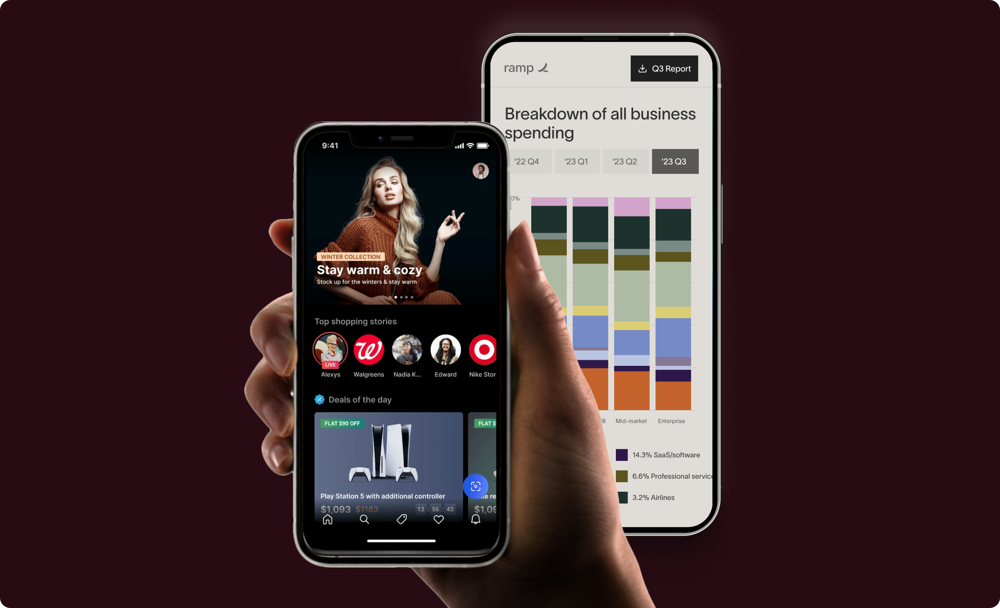
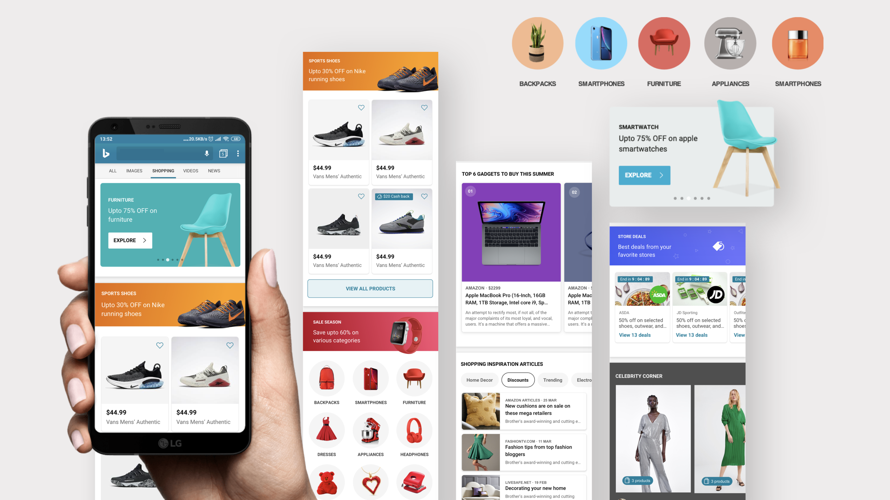
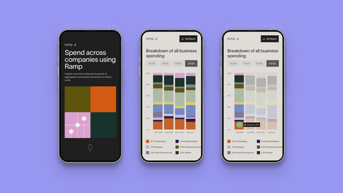
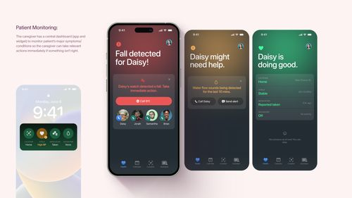
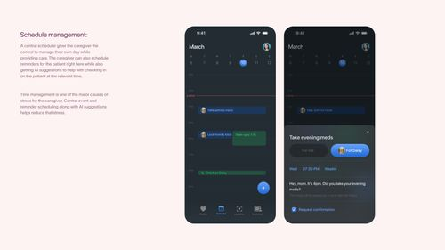
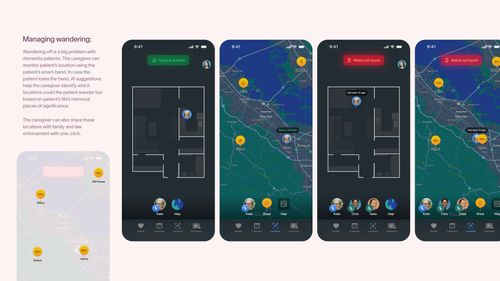
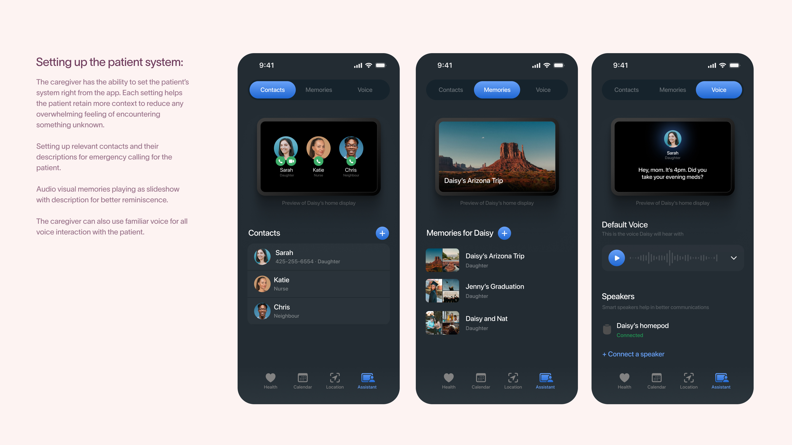
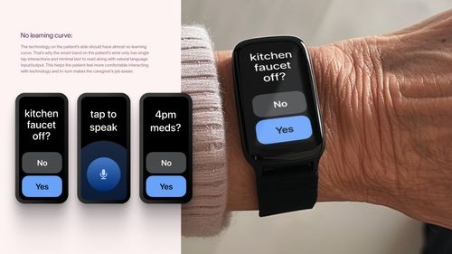
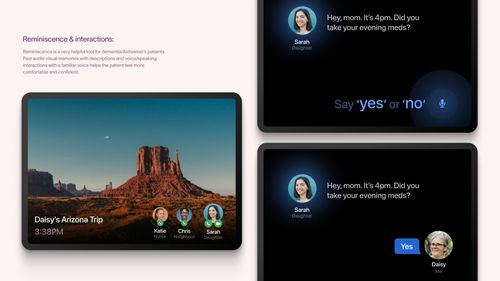

The given compilation showcases design previews of some of the mobile projects I've done over the years. The previews include projects done with teams at companies/startups and also some speculative passion projects I did myself.
The goal is to not showcase each project in detail but give a preview of how the final designs turned out.
I worked as the sole designer on all of the below projects with different teams over the last 5 years.
The projects range from 0→1 mobile projects (web and app) to incremental improvements.
Product work showcases some mobile projects that I did during my time at Microsoft, Ramp, and Guidr (a company I started).
I was leading design for Shopping @Microsoft (mainly within Bing and the Start mobile app) when I worked on a blue-sky vision for mobile shopping. The goal was to come up with novel and immersive interactions for showcasing ads and browsing shop-able content.
I was also able to apply for a design patent for one of the interaction (stacked horizontal card scroll) I came up with during this exploration.
While working on the redesign of Bing Shopping web experience, I came up with the idea of using image-based colors across the surface to create more immersive and visually-appealing shopping modules. Shopping is a very visual activity and I made a lot of decisions (such as removing excess text from the cards, using color co-ordinated backgrounds, etc.) keeping that in mind.

In 2019, I came up with the idea of helping new graduated and school students by connecting them with domain experts using a mobile marketplace. I came up with some quick designs and built an app with my co-founder and launched it. The app featured an expert database, scheduling functionality, audio/video calling, internal messaging, etc.
During my time at Ramp, I was working on a web platform that showcased spending data across different company sizes. The experience was primarily build around interactive charts and graphs. After coming up with the designs for desktop, I also worked on optimizing those visualizations and touch interactions for mobile.

These projects are basically the ones I do to keep my craft alive. When I don’t have to worry moving the numbers and follow the rules - just pure creation, speculation, and visualizing the future.
After a lot of research and analysis, I came up with the concept of a ubiquitous mobile virtual assistant (called uva) with deep OS control along with gesture & natural language inputs, and a multi-command voice interface. It could also provide smart suggestions by being integrated into 3rd party apps.
I came up with the concept of Al'z Well - a system of connected devices that helps reduce stress on dementia caregivers and help the patients live more independently. The caveat was the use only the existing technology and shown below is a preview of the app used by the caregivers. It includes geo-tagging, hyper-local amber alerts, AI assistant control, smart scheduling, contextual reminders, etc.





